下载和安装Hopper
请支持正版
警告⚠️：此处Hopper破解版仅限于技术研究使用，不准用于非法目的，否则后果自负。
如有侵权，请联系笔者删除。
下载
下载破解版的Hopper Disassembler：
hopper disassembler for mac v4破解版下载(免授权文件/序列号) v4.0.8 - 软件学堂
-> 得到：hopperdisassembler_6040.dmg
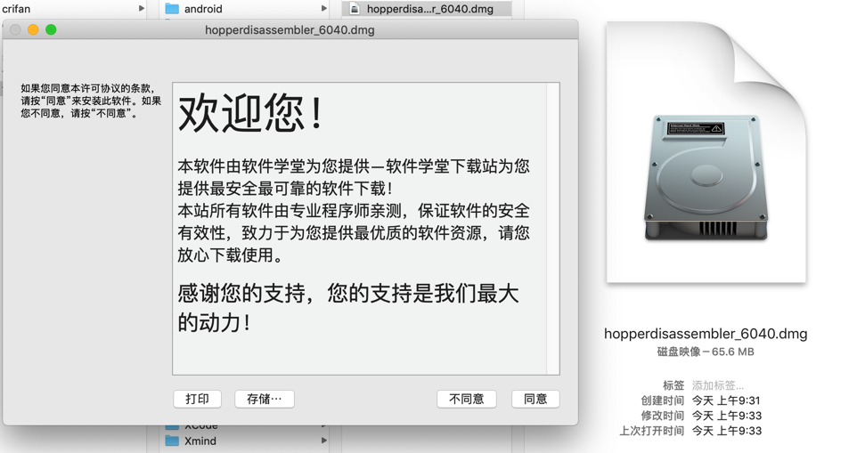
安装
双击dmg，继续，进入界面：
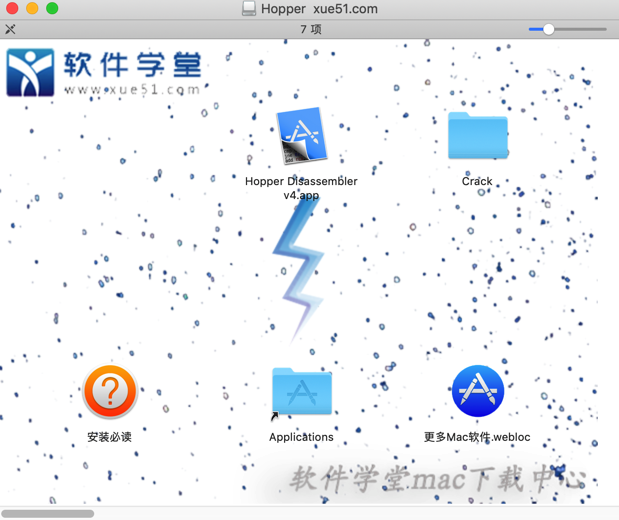
- 注：不要参考教程中说的，双击，否则会直接运行的。
去把Hopper Disassembler v4.app拖动到应用程序中：
另外Crack中有个：HopperV4Patcher.app
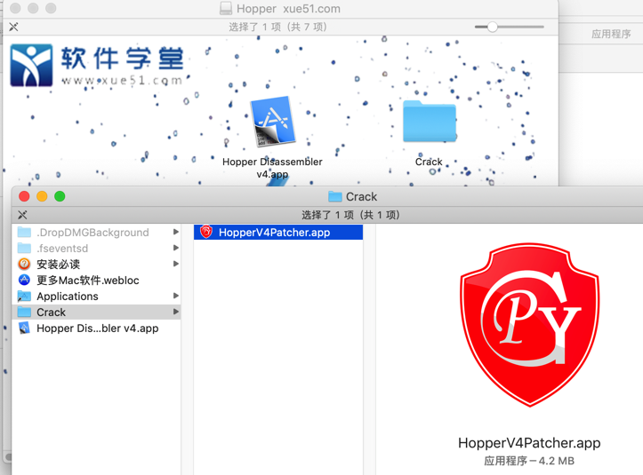
双击运行，出现提示：
- 不明身份开发者
- 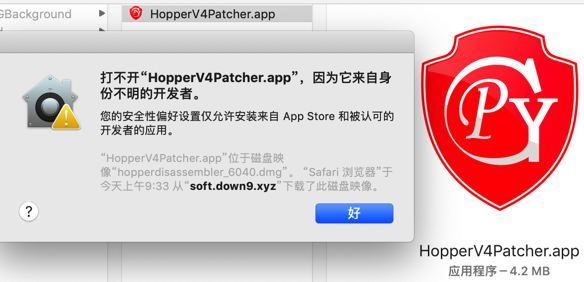
去隐私中允许：
- 仍要打开
- 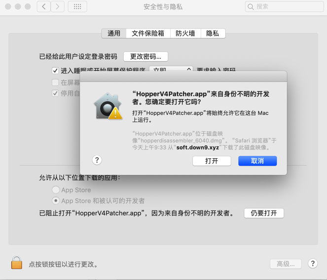
即可出现界面：
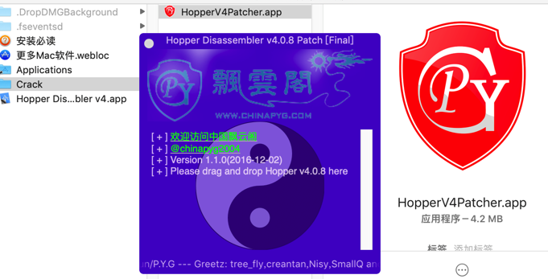
再去把应用程序中的：Hopper Disassembler v4.app拖动到这个patch界面中：
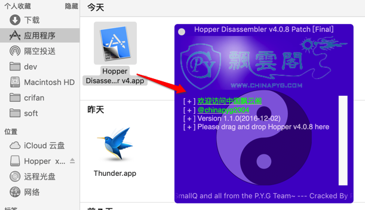
瞬间就破解好了：
- 显示
patch success- 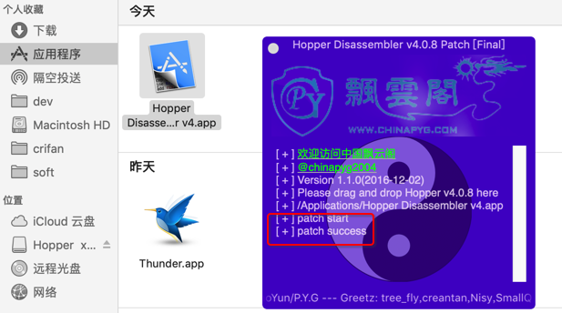
如此，即可安装完毕，即可正常打开，已破解的Hopper：
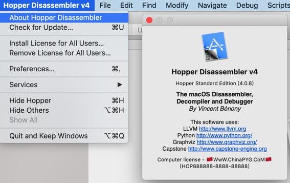
的确没有注册弹框，可以看到Computer license了，说明破解成功。
另外：为了防止更新导致破解失效，去看看更新设置：
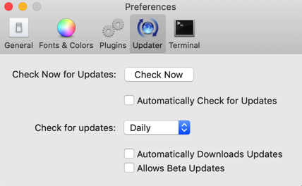
此处已经是关闭自动升级更新了，是我们希望的：不要开启自动更新。
后记：
结果用了几天后，还是会过期，无法继续使用：
Demo period has expired
Document will be closed
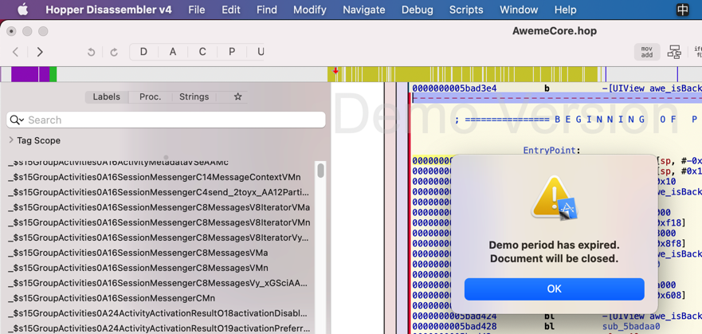
点击OK，就退出了。
另外，此处感觉Hopper也比较卡顿，且对于大型app也会卡死，所以放弃。
继续转用IDA吧。